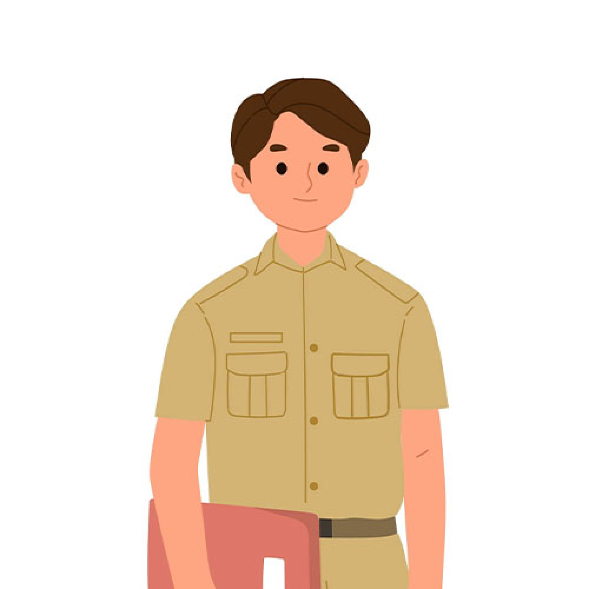

JAJARAN APARATUR
Desa Sumberkolak
Budi Santoso
Kepala Desa
Ratna Dewi
Sekretaris

Agus Widodo
Bendahara
Siti Nurhaliza
Humas
Andi Setiawan
Keamanan
SISTEM INFORMASI DESA
SUMBERKOLAK
SITUBONDO
Budi Santoso
Kepala Desa
Visi
"MENJADIKAN Desa Sumberkolak YANG OKE“
Misi
1. Mewujudkan Sumber Daya Manusia yang Sehat, Cerdas,Terampil danProduktif yang Dilandasi Nilai-nilai Keimanan dan Ketakwaan
2. Membangun Kemandirian Ekonomi yang BerdimensiKerakyatan
3. Mewujudkan Tata Kelola Pemerintahan Yang Berintegritas, Akuntabel, Bersih, Transparan
4. Pemerataan & perluasan pembangunan infrastruktur disemua sektor untuk mendorong pertumbuhan ekonomi, sosial, budaya dan pelestarian lingkungan
Penduduk
Penduduk Berdasarkan Usia
Penduduk Berdasarkan Jenis Kelamin
Desa Sumberkolak
Kepala Desa
Sekretaris
Bendahara
Humas
Keamanan
Berita Desa
Pelatihan UMKM untuk Warga Desa
11 Januari 2024
Baca Selengkapnya
Festival Seni dan Budaya Desa
05 Februari 2024
Baca Selengkapnya
Program Penanaman Seribu Pohon
14 Mei 2024
Baca Selengkapnya
Laporan Keuangan
APBDes 2022 Pelaksanaan
Pendapatan
Rp 2.174.000.000,00
Rp 2.200.000.000,00
Belanja
Rp 2.070.000.000,00
Rp 2.150.000.000,00
Pembiayaan
Rp 50.000.000,00
Rp 55.000.000,00
APBDes 2023 Pelaksanaan
Pendapatan
Rp 2.248.000.000,00
Rp 2.350.000.000,00
Belanja
Rp 2.256.000.000,00
Rp 2.300.000.000,00
Pembiayaan
Rp 57.000.000,00
Rp 70.000.000,00
APBDes 2024 Pelaksanaan
Pendapatan
Rp 2.390.000.000,00
Rp 2.500.000.000,00
Belanja
Rp 2.180.000.000,00
Rp 2.300.000.000,00
Pembiayaan
Rp 69.000.000,00
Rp 75.000.000,00